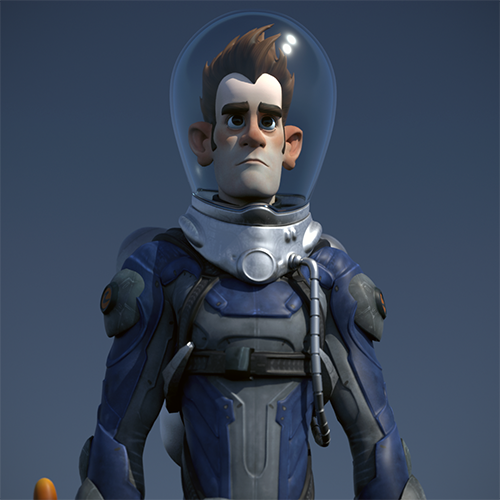
在本教程中，我们将介绍如何使用 standard_surface 着色器创建逼真的材质（例如，玻璃和金属）。我们还将结合 physical_sky 着色器使用 skydome_light 灯光替换现有场景的照明，从而实现更有效的控制并呈现更逼真的外观。最后，我们将添加背景并渲染场景。
有关对应的 Maya 场景文件，请单击此处。
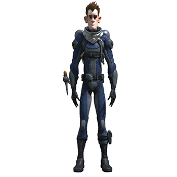
我们要使用 MtoA 对星际英雄“Sven”进行着色、照明和渲染
| 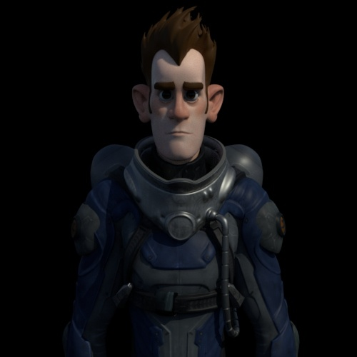 | 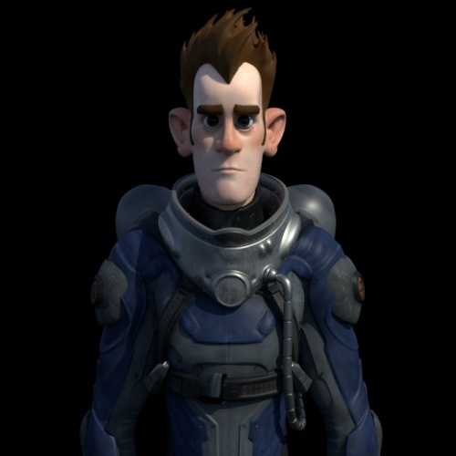 |
| _曝光(Exposure)_：0 | _曝光(Exposure)_：1 |
| 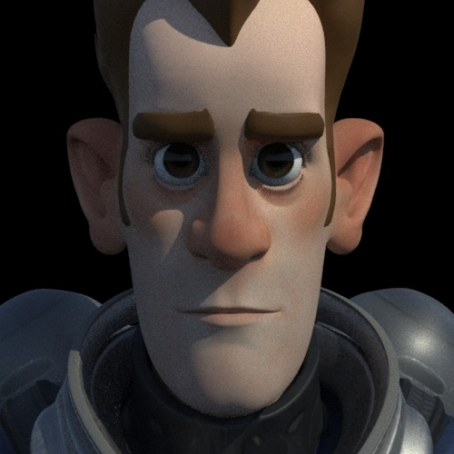 | 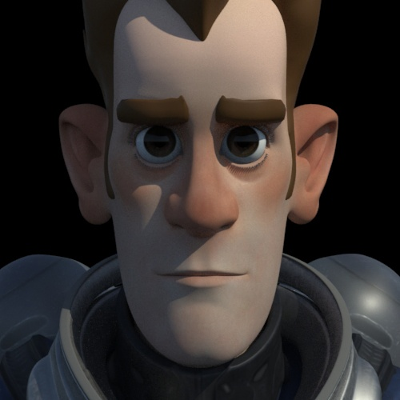 |
| _light_samples_：1 | _light_samples_：3 |
该场景包含各种 Blinn 和 Phong 着色器。我们要将这些着色器转化为 MtoA 内物理上更精确的着色器。幸运的是，我们可以使用“属性编辑器”(Attribute Editor)窗口中的着色器“类型”(Type)菜单来转化。我们主要使用多用途的 standard_surface 着色器。
Sven 的太空服由指定给其手臂、腿和躯干的若干 Blinn 着色器构成。
有关镜面反射菲涅尔的详细信息，请单击此处。
为了获得逼真的皮肤着色效果，我们将再次使用 standard_surface 着色器。该着色器有着逼真的“次表面散射”(Sub-Surface Scattering)属性，与我们的单一颜色贴图非常匹配。
对于头发，我们将创建一个简单的塑料外观着色器。
在此场景中，眼几何体由两个对象构成：“眼”和“角膜”。眼几何体位于角膜几何体内部。因此，眼颜色应指定给眼球。
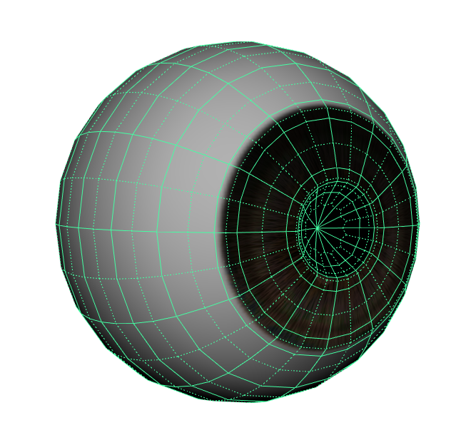
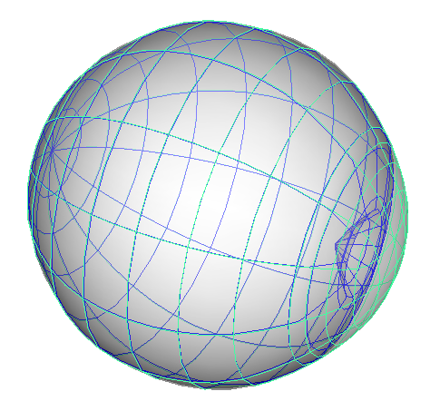
围绕眼几何体的角膜几何体
渲染后的眼球应如下图所示。
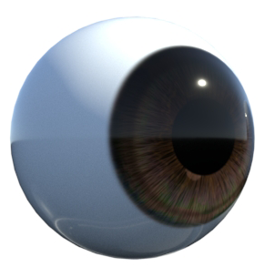
我们为头盔指定一种玻璃材质。头盔已使用厚度建模，且法线朝向正确的方向。使用 MtoA 渲染逼真的玻璃曲面时，这非常重要。
有关渲染玻璃曲面的详细信息，请单击此处。
信息：默认情况下，transmission_ray_depth 已设置为 8。如果降低此值并渲染头盔玻璃，可以看到眼角膜（也属于折射材质）显示为黑色。这是因为光线的深度有限，因此无法穿透玻璃和眼角膜着色器。
| 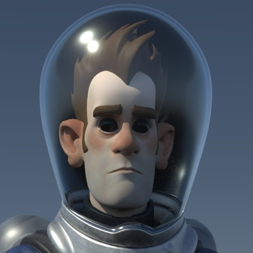 | 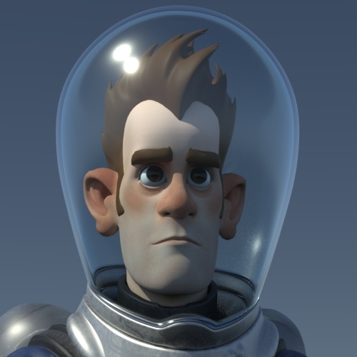 |
| _transmission_ray_depth_：2（眼睛显示为黑色） | _transmission_ray_depth_：4（透过玻璃可以看见眼睛） |
让我们更改 Sven 的颈圈（和氧气罐）上的着色器，以实现更有“金属感”的外观。
打开渲染设置(Render Settings)窗口中的*采样(Sampling)。对于测试渲染，“摄影机(AA)”(Camera (AA))*采样数设置为 3 已足够。但是，对于最终帧渲染，至少需要将它增加到 5。
有关采样的简要手册，请单击此处。
使用 MtoA 渲染场景时，建议查看渲染设置(Render Settings)窗口的*诊断(Diagnostics)*选项卡中的 Arnold 日志。此日志文件将显示出现的警告和统计信息，这些信息有助于对场景文件进行诊断。
有关如何阅读渲染日志的手册，请单击此处。
就是这样。祝贺您已完成了本教程。现在我们要去探索新的渲染世界！